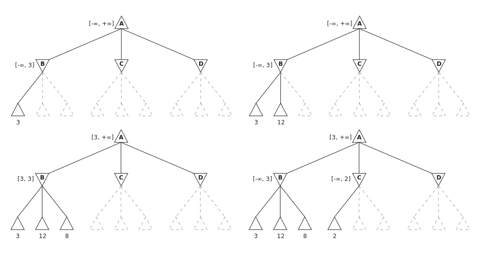
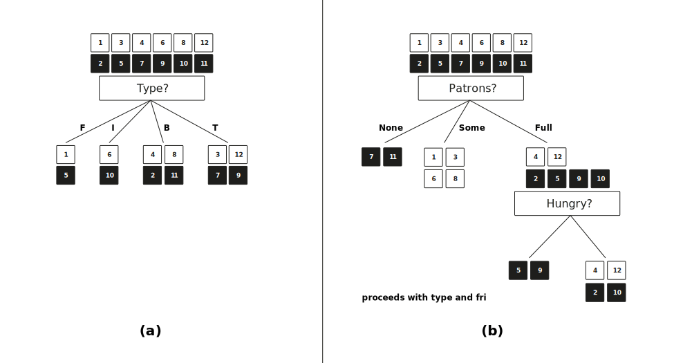

<!DOCTYPE html>
<html xmlns="http://www.w3.org/1999/xhtml" lang="en" xml:lang="en"><head>

<meta charset="utf-8">
<meta name="generator" content="quarto-1.3.340">

<meta name="viewport" content="width=device-width, initial-scale=1.0, user-scalable=yes">

<meta name="author" content="Andy Weeger">
<meta name="dcterms.date" content="2023-01-01">

<title>awe.lectures - Solution Notes</title>
<style>
code{white-space: pre-wrap;}
span.smallcaps{font-variant: small-caps;}
div.columns{display: flex; gap: min(4vw, 1.5em);}
div.column{flex: auto; overflow-x: auto;}
div.hanging-indent{margin-left: 1.5em; text-indent: -1.5em;}
ul.task-list{list-style: none;}
ul.task-list li input[type="checkbox"] {
  width: 0.8em;
  margin: 0 0.8em 0.2em -1em; /* quarto-specific, see https://github.com/quarto-dev/quarto-cli/issues/4556 */ 
  vertical-align: middle;
}
/* CSS for citations */
div.csl-bib-body { }
div.csl-entry {
  clear: both;
}
.hanging-indent div.csl-entry {
  margin-left:2em;
  text-indent:-2em;
}
div.csl-left-margin {
  min-width:2em;
  float:left;
}
div.csl-right-inline {
  margin-left:2em;
  padding-left:1em;
}
div.csl-indent {
  margin-left: 2em;
}</style>


<script src="../../../../site_libs/quarto-nav/quarto-nav.js"></script>
<script src="../../../../site_libs/quarto-nav/headroom.min.js"></script>
<link href="../../../../assets/favicon.png" rel="icon" type="image/png">
<script src="../../../../site_libs/clipboard/clipboard.min.js"></script>
<script src="../../../../site_libs/quarto-html/quarto.js"></script>
<script src="../../../../site_libs/quarto-html/popper.min.js"></script>
<script src="../../../../site_libs/quarto-html/tippy.umd.min.js"></script>
<link href="../../../../site_libs/quarto-html/tippy.css" rel="stylesheet">
<link href="../../../../site_libs/quarto-html/quarto-syntax-highlighting.css" rel="stylesheet" id="quarto-text-highlighting-styles">
<script src="../../../../site_libs/bootstrap/bootstrap.min.js"></script>
<link href="../../../../site_libs/bootstrap/bootstrap-icons.css" rel="stylesheet">
<link href="../../../../site_libs/bootstrap/bootstrap.min.css" rel="stylesheet" id="quarto-bootstrap" data-mode="light">
<script src="../../../../site_libs/quarto-contrib/glightbox/glightbox.min.js"></script>
<link href="../../../../site_libs/quarto-contrib/glightbox/glightbox.min.css" rel="stylesheet">
<link href="../../../../site_libs/quarto-contrib/glightbox/lightbox.css" rel="stylesheet">
<script id="quarto-search-options" type="application/json">{
  "language": {
    "search-no-results-text": "No results",
    "search-matching-documents-text": "matching documents",
    "search-copy-link-title": "Copy link to search",
    "search-hide-matches-text": "Hide additional matches",
    "search-more-match-text": "more match in this document",
    "search-more-matches-text": "more matches in this document",
    "search-clear-button-title": "Clear",
    "search-detached-cancel-button-title": "Cancel",
    "search-submit-button-title": "Submit"
  }
}</script>

  <script src="https://polyfill.io/v3/polyfill.min.js?features=es6"></script>
  <script src="https://cdn.jsdelivr.net/npm/mathjax@3/es5/tex-chtml-full.js" type="text/javascript"></script>

<meta property="og:title" content="awe.lectures - Solution Notes">
<meta property="og:description" content="🧠 Introduction to AI — I2AI_4">
<meta property="og:image" content="https://awe-hnu.github.io/lectures/I2AI/23ST/notes/images/pruning.svg">
<meta property="og:site-name" content="awe.lectures">
</head>

<body class="nav-fixed">

<div id="quarto-search-results"></div>
  <header id="quarto-header" class="headroom fixed-top">
    <nav class="navbar navbar-expand navbar-dark ">
      <div class="navbar-container container-fluid">
      <div class="navbar-brand-container">
    <a class="navbar-brand" href="../../../../index.html">
    <span class="navbar-title">awe</span>
    </a>
  </div>
          <ul class="navbar-nav navbar-nav-scroll ms-auto">
  <li class="nav-item">
    <a class="nav-link" href="../../../../index.html" rel="" target="">
 <span class="menu-text">Start</span></a>
  </li>  
  <li class="nav-item">
    <a class="nav-link" href="https://www.hnu.de" rel="" target="">
 <span class="menu-text">HNU</span></a>
  </li>  
</ul>
          <div class="quarto-navbar-tools">
</div>
      </div> <!-- /container-fluid -->
    </nav>
</header>
<!-- content -->
<header id="title-block-header" class="quarto-title-block default page-columns page-full">
  <div class="quarto-title-banner page-columns page-full">
    <div class="quarto-title column-page-left">
      <h1 class="title">Solution Notes</h1>
            <p class="subtitle lead">🧠 Introduction to AI — I2AI_4</p>
                      </div>
  </div>
    
  <div class="quarto-title-meta-author">
    <div class="quarto-title-meta-heading">Author</div>
    <div class="quarto-title-meta-heading">Organisation</div>
    
      <div class="quarto-title-meta-contents">
      <p class="author">Andy Weeger </p>
    </div>
      <div class="quarto-title-meta-contents">
          <p class="affiliation">
              Neu-Ulm University of Applied Sciences
            </p>
        </div>
      </div>

  <div class="quarto-title-meta">

        
      <div>
      <div class="quarto-title-meta-heading">Published</div>
      <div class="quarto-title-meta-contents">
        <p class="date">January 1, 2023</p>
      </div>
    </div>
    
      <div>
      <div class="quarto-title-meta-heading">Modified</div>
      <div class="quarto-title-meta-contents">
        <p class="date-modified">May 14, 2023</p>
      </div>
    </div>
      
    </div>
    
  
  </header><div id="quarto-content" class="quarto-container page-columns page-rows-contents page-layout-full page-navbar">
<!-- sidebar -->
<!-- margin-sidebar -->
    <div id="quarto-margin-sidebar" class="sidebar margin-sidebar">
        <nav id="TOC" role="doc-toc" class="toc-active">
    <h2 id="toc-title">On this page</h2>
   
  <ul>
  <li><a href="#introduction" id="toc-introduction" class="nav-link active" data-scroll-target="#introduction">Introduction</a></li>
  <li><a href="#intelligent-agents" id="toc-intelligent-agents" class="nav-link" data-scroll-target="#intelligent-agents">Intelligent Agents</a></li>
  <li><a href="#search" id="toc-search" class="nav-link" data-scroll-target="#search">Search</a></li>
  <li><a href="#games" id="toc-games" class="nav-link" data-scroll-target="#games">Games</a></li>
  <li><a href="#logical-agents" id="toc-logical-agents" class="nav-link" data-scroll-target="#logical-agents">Logical agents</a></li>
  <li><a href="#probability" id="toc-probability" class="nav-link" data-scroll-target="#probability">Probability</a></li>
  <li><a href="#learning" id="toc-learning" class="nav-link" data-scroll-target="#learning">Learning</a></li>
  <li><a href="#literature" id="toc-literature" class="nav-link" data-scroll-target="#literature">Literature</a></li>
  </ul>
</nav>
    </div>
<!-- main -->
<main class="content quarto-banner-title-block column-page-left" id="quarto-document-content">


<p>The solution notes are taken from <span class="citation" data-cites="RusselNorvig2022AIMA">Russel and Norvig (<a href="#ref-RusselNorvig2022AIMA" role="doc-biblioref">2022</a>)</span>.</p>
<section id="introduction" class="level1">
<h1>Introduction</h1>
<section id="what-is-ai" class="level2">
<h2 data-anchor-id="what-is-ai">What is AI?</h2>
<p>We define artificial intelligence as the study and construction of agent programs that perform well in a given environment, for a given agent architecture.</p>
<p>We define an agent as an entity that takes action in response to percepts from an environment.</p>
<p>We define rationality as the property of a system which does the “right thing” given what it knows.</p>
<p>We define logical reasoning as the a process of deriving new sentences from old, such that the new sentences are necessarily true if the old ones are true. (Notice that does not refer to any specific syntax oor formal language, but it does require a well-defined notion of truth.)</p>
</section>
<section id="i2ai_1-e3" class="level2">
<h2 data-anchor-id="i2ai_1-e3">I2AI_1 E3</h2>
<p>To what extent are the following computer systems instances of artificial intelligence:</p>
<ul>
<li>Although <strong>bar code scanning</strong> is in a sense computer vision, these are not AI systems. The problem of reading a bar code is an extremely limited and artificial form of visual interpretation, and it has been carefully designed to be as simple as possible, given the hardware.</li>
<li>The problem of determining the <strong>relevance of a web page to a query</strong> is a problem in natural language understanding, and the techniques are related to those we will discuss later. Search engines also use clustering techniques. Likewise, other functionalities provided by a search engines use intelligent techniques; for instance, the spelling corrector uses a form of data mining based on observing users’ corrections of their own spelling errors. On the other hand, the problem of indexing billions of web pages in a way that allows retrieval in seconds is a problem in database design, not in artificial intelligence.</li>
<li>To a limited extent. <strong>Voice-activated telephone</strong> menus tend to use vocabularies which are very limited – e.g.&nbsp;the digits, “Yes”, and “No” — and within the designers’ control, which greatly simplifies the problem. On the other hand, the programs must deal with an uncontrolled space of all kinds of voices and accents. Modern digital assistants like Siri and the Google Assistant make more use of artificial intelligence techniques, but still have a limited repetoire.</li>
<li><strong>Internet routing algorithms</strong> are borderline. There is something to be said for viewing these as intelligent agents working in cyberspace. The task is sophisticated, the information available is partial, the techniques are heuristic (not guaranteed optimal), and the state of the world is dynamic. All of these are characteristic of intelligent activities. On the other hand, the task is very far from those normally carried out in human cognition. In recent years there have been suggestions to base more core algorithmic work on machine learning.</li>
</ul>
</section>
<section id="i2ai_1-e5" class="level2">
<h2 data-anchor-id="i2ai_1-e5">I2AI_1 E5</h2>
<p>Read the statements (one after the other) and discuss if the second sentence of each statement is true and if it does imply the first.</p>
<blockquote class="blockquote">
<p>Surely computers cannot be intelligent<br>
—they can do only what their programmers tell them.</p>
</blockquote>
<p>This depends on your definition of “intelligent” and “tell.” In one sense computers only do what the programmers command them to do, but in another sense what the programmers consciously tells the computer to do often has very little to do with what the computer actually does. Anyone who has written a program with an ornery bug knows this, as does anyone who has written a successful machine learning program. So in one sense Samuel “told” the computer “learn to play checkers better than I do, and then play that way,” but in another sense he told the computer “follow this learning algorithm” and it learned to play. So we’re left in the situation where you may or may not consider learning to play checkers to be a sign of intelligence (or you may think that learning to play in the right way requires intelligence, but not in this way), and you may think the intelligence resides in the programmer or in the computer.</p>
<blockquote class="blockquote">
<p>Surely animals cannot be intelligent<br>
—they can do only what their genes tell them.</p>
</blockquote>
<p>The point of this exercise is to notice the parallel with the previous one. Whatever you decided about whether computers could be intelligent in 1.11, you are committed to making the same conclusion about animals (including humans), unless your reasons for deciding whether something is intelligent take into account the mechanism (programming via genes versus programming via a human programmer).</p>
<blockquote class="blockquote">
<p>Surely animals, humans, and computers cannot be intelligent<br>
—they can do only what their constituent atoms are told to do by the laws of physics.</p>
</blockquote>
<p>Again, your definition of “intelligent” drives your answer to this question.</p>
</section>
</section>
<section id="intelligent-agents" class="level1">
<h1>Intelligent Agents</h1>
<section id="i2ai_2-e4" class="level2">
<h2 data-anchor-id="i2ai_2-e4">I2AI_2 E4</h2>
<ol type="1">
<li><dl>
<dt>An agent that senses only partial information about the state cannot be perfectly rational.</dt>
<dd>
<strong>False.</strong> An agent that only senses partial information could be rational, consider an agent whose performance measure is based on its ability to stay completely static in an environment where there are no other agents, such an agent could be perfectly rational even if it did not have any sensors at all. Granted, such an agent would not be very interesting but it would indeed be rational.
</dd>
</dl></li>
<li><dl>
<dt>There exist task environments in which no pure reflex agent can behave rationally.</dt>
<dd>
<strong>True.</strong> A pure reflex agent ignores previous percepts, so cannot obtain an optimal state estimate in a partially observable environment. Consider a partially unobservable task environment where the performance measure is based on the agent’s extent of exploration. Now assume that this agent is purely reflex, only responding when it’s world state changes, since its performance measure is to explore but its actions are conditional upon change around it then the agent waits for its state to change but it never will because it is the agent’s entire job is to change its state.
</dd>
</dl></li>
<li><dl>
<dt>There exists a task environment in which every agent is rational.</dt>
<dd>
<strong>True.</strong> Consider an environment that disables all agent’s actuators, rendering them immobile (e.g., an environment with a single state). Regardless of what performance measures these agents possessed they are still judged as rational because they are physically incapable of performing anything.
</dd>
</dl></li>
<li><dl>
<dt>Every agent is rational in an unobservable environment.</dt>
<dd>
<strong>False.</strong> Some actions are stupid—and the agent may know this if it has a model of the environment—even if one cannot perceive the environment state.
</dd>
</dl></li>
<li><dl>
<dt>There is a model-based reflex agent that can remember all of its percepts.</dt>
<dd>
<strong>True.</strong> There could be one, but usually, it keeps the model. A model-based reflex agent is one that uses internal memory and a percept history to create a model of the environment in which it’s operating and make decisions based on that model. The term percept means something that has been observed or detected by the agent. The model-based reflex agent stores the past percepts in its memory and uses them to create a model of the environment. The agent then uses this model to determine which action should be taken in any given situation.
</dd>
</dl></li>
<li><dl>
<dt>A perfectly rational poker-playing agent never loses.</dt>
<dd>
<strong>False.</strong> Due to the partially observable, multi-agent, stochastic, sequential, static and discrete nature of poker, even a perfectly rational agent could not possibly win every game unless the agent is completely omniscient, there are too many factors contributing to the complexity of the task environment that are beyond the agent’s scope of influence. Although, these things are true, let us not discount the fact that the agent could be a learning agent and improve its ability to play but it would still probably lose.
</dd>
</dl></li>
</ol>
</section>
<section id="i2ai_2-e5" class="level2">
<h2 data-anchor-id="i2ai_2-e5">I2AI_2 E5</h2>
<p>For each of the following activities, give a PEAS description of the task environment and characterize it in terms of the properties discussed in class.</p>
<p><em>Many of these can actually be argued either way, depending on the level of detail and abstraction.</em></p>
<p><strong>Playing soccer:</strong> Partially observable, stochastic, sequential, dynamic, continuous, multi-agent.</p>
<p><strong>Exploring the subsurface oceans of Titan:</strong> Partially observable, stochastic, sequential, dynamic, continuous, single agent (unless there are alien life forms that are usefully modeled as agents).</p>
<p><strong>Shopping for used AI books on the Internet:</strong> Partially observable, deterministic, sequential, static, discrete, single agent. (it can also be multi-agent and dynamic if we buy books via auction)</p>
<p><strong>Playing a tennis match:</strong> Fully observable, stochastic, episodic (every point is separate), dynamic, continuous, multi-agent.</p>
</section>
<section id="i2ai_2-e6" class="level2">
<h2 data-anchor-id="i2ai_2-e6">I2AI_2 E6</h2>
<p>For each of the following task environment properties, rank the example task environments from most to least according to how well the environment satisfies the property.</p>
<p>Lay out any assumptions you make to reach your conclusions.</p>
<ol type="a">
<li><strong>Fully observable</strong>: driving; document classification; tutoring a student in calculus; skin cancer diagnosis from images</li>
<li><strong>Continuous</strong>: driving; spoken conversation; written conversation; climate engineering by stratospheric aerosol injection</li>
<li><strong>Stochastic</strong>: driving; sudoku; poker; soccer</li>
<li><strong>Static</strong>: chat room; checkers; tax planning; tennis</li>
</ol>
<p><strong>Fully Observable</strong>: document classification &gt; skin cancer diagnosis from images &gt; driving &gt; tutoring a high-school student in calculus.</p>
<ul>
<li>Document classification is a fairly canonical example of a (non-sequential) observable problem, because the correct classification depends almost entirely on the visible text of the document itself. There might be a slight influence from “provenance” information (date, authorship, etc.) that may not be directly observable.</li>
<li>Skin cancer diagnosis can sometimes be done well from an image of the lesion, bot other factors such as patient age, changes in the lesion over time, medical history, and family history can be important.</li>
<li>Driving is often considered to be observable because we imagine that we are making decisions based on what we see, but (1) velocity and turn signal status of other vehicles can be judged only from multiple image frames, and (2) assessing the intended actions of other vehicles may require accumulating information over an extended period—e.g., to determine if a vehicle is stopped or broken down, driving slowly or looking for an address or a parking spot, turning left or has forgotten to turn off the turn signal. Other vehicles, hedges, fog, and so on can obscure visual access to important aspects of the driving environment.</li>
<li>Tutoring is almost completely unobservable: what matters is the student’s level of understanding, learning style, basic math skills, etc. clues must be gathered over days, weeks, and months.</li>
</ul>
<p><strong>Continuous:</strong> climate engineering &gt; driving &gt; spoken conversation &gt; written conversation.</p>
<ul>
<li>Climate engineering by aerosol injection is quintessentially continuous: the engineer must decide how much to inject, where, and when, and all of these are continuous quantities.</li>
<li>The control actions of driving are mostly continuous (steering, acceleration/ braking) but there are discrete elements (turn signal, headlights). More importantly, the problem is usually handled using discrete high-level actions (change lanes left, take exit, etc.) that have implementations as continuous control problems. This kind of discrete/ continuous hierarchy is very common; playing chess in the physical world is a perfect example.</li>
<li>Spoken conversation is closer to chess than driving: roughly speaking, we choose the discrete words to say and delegate the saying to continuous motor control routines. Prosody (volume, pitch, and speed variation) is, however, an important continuous element in how we speak that is largely absent from written communication.</li>
</ul>
<p><strong>Stochastic:</strong> poker &gt; soccer &gt; driving &gt; sudoku.</p>
<ul>
<li>In poker, nearly everything is determined by the fall of the cards, which is entirely stochastic from the viewpoint of the players.</li>
<li>Both soccer and driving contain elements that are fairly deterministic, such as the flight of the ball and the response of the engine, and elements that are stochastic, such as tire punctures and the outcomes of tackles. Yet typically one can make reasonably reliable driving plans over many minutes, whereas it is essentially impossible to predict the state of a soccer game one minute into the future. Sudoku, of course, is entirely deterministic.</li>
</ul>
<p><strong>Static:</strong> tax planning &gt; checkers &gt; chat room &gt; tennis.</p>
<ul>
<li>While no human activity is completely static, given the finite length of our lifetimes, tax planning comes close—the typical “deadline” to get it done is often weeks or months, and the relevant aspects of the environment (life/death, number of offspring, tax law) may change even more slowly.</li>
<li>In checkers, the world state doesn’t change until someone moves, but the clock ticks so the problem is semi-dynamic.</li>
<li>In the chat room, long delays in replying are unacceptable, so it is a fairly real-time environment, but not nearly as real-time as tennis, where a delay of a split second often makes the difference between winning and losing a point.</li>
</ul>
</section>
</section>
<section id="search" class="level1">
<h1>Search</h1>
<section id="i2ai_3-e3" class="level2">
<h2 data-anchor-id="i2ai_3-e3">I2AI_3 E3</h2>
<p>Your goal is to navigate a robot out of a maze. It starts in the center of the maze facing north. You can turn the robot to face north, east, south, or west; direct the robot to move forward a certain distance (it will stop before a wall).</p>
<ol type="a">
<li>Formulate this problem. How large is the state space?</li>
<li>In navigating a maze, the only place we need to turn is at the intersection of two or more corridors. Reformulate this problem using this observation. How large is the state space now?</li>
<li>From each point in the maze, we can move in any of the four directions until we reach a turning point, and this is the only action we need to do. Reformulate the problem using these actions. Do we need to keep track of the robot’s orientation now?</li>
<li>In our initial description of the problem we already abstracted from the real world. Name three such simplifications we made.</li>
</ol>
<section id="problem-statement" class="level4">
<h4 data-anchor-id="problem-statement">Problem statement</h4>
<ul>
<li>The center of the maze is at (0; 0), and the maze itself is a square from (-1;-1) to (1; 1).</li>
<li><strong>Initial state:</strong> robot at coordinate (0; 0), facing North.</li>
<li><strong>Goal test:</strong> either jxj &gt; 1 or jyj &gt; 1 where (x; y) is the current location.</li>
<li><strong>Successor function:</strong> move forwards any distance d; change direction robot it facing.</li>
<li><strong>Cost function:</strong> total distance moved.</li>
</ul>
<p>The state space is infinitely large, since the robot’s position is continuous.</p>
</section>
<section id="reformulated-problem-statement" class="level3">
<h3 data-anchor-id="reformulated-problem-statement">Reformulated problem statement</h3>
<p>The state will record the intersection the robot is currently at, along with the direction it’s facing. At the end of each corridor leaving the maze we will have an exit node. We’ll assume some node corresponds to the center of the maze.</p>
<ul>
<li><strong>Initial state:</strong> at the center of the maze facing North.</li>
<li><strong>Goal test:</strong> at an exit node.</li>
<li><strong>Successor function:</strong> move to the next intersection in front of us, if there is one; turn to face a new direction.</li>
<li><strong>Cost function:</strong> total distance moved.</li>
</ul>
<p>There are 4n states, where n is the number of intersections.</p>
</section>
<section id="reformulated-problem-statement-2" class="level3">
<h3 data-anchor-id="reformulated-problem-statement-2">Reformulated problem statement #2</h3>
<ul>
<li><strong>Initial state:</strong> at the center of the maze.</li>
<li><strong>Goal test:</strong> at an exit node.</li>
<li><strong>Successor function:</strong> move to next intersection to the North, South, East, or West.</li>
<li><strong>Cost function:</strong> total distance moved.</li>
</ul>
<p>We no longer need to keep track of the robot’s orientation since it is irrelevant to predicting the outcome of our actions, and not part of the goal test. The motor system that executes this plan will need to keep track of the robot’s current orientation, to know when to rotate the robot.</p>
<section id="abstractions" class="level4">
<h4 data-anchor-id="abstractions">Abstractions</h4>
<p>State:</p>
<ul>
<li>Ignoring the height of the robot off the ground, whether it is tilted off the vertical.</li>
<li>The robot can face in only four directions.</li>
<li>Other parts of the world ignored: possibility of other robots in the maze, the weather in the Caribbean.</li>
</ul>
<p>Action:</p>
<ul>
<li>We assumed all positions we safely accessible: the robot couldn’t get stuck or damaged.</li>
<li>The robot can move as far as it wants, without having to recharge its batteries.</li>
<li>Simplified movement system: moving forwards a certain distance, rather than controlled each individual motor and watching the sensors to detect collisions.</li>
</ul>
</section>
</section>
</section>
</section>
<section id="games" class="level1">
<h1>Games</h1>
<section id="i2ai_4-e2" class="level2">
<h2 data-anchor-id="i2ai_4-e2">I2AI_4 E2</h2>
<section id="completeness" class="level4">
<h4 data-anchor-id="completeness">Completeness</h4>
<p>Explain if the <code>MINIMAX</code> algorithm is complete and optimal.</p>
<p>In two-player, discrete, deterministic, turn-taking zero-sum gamges with perfect information, the <code>MINIMAX</code> algorithm can select optimal moves by a depth-first emuration, the algorithm is also guaranteed to find a solution when there is one.</p>
<p>The algorithm performs a complete depth-first exploration of the game tree. If the maximum depth of the tree is <span class="math inline">\(m\)</span> and there are <span class="math inline">\(b\)</span> legal moves at each point, then the time complexity is <span class="math inline">\(O(b^m)\)</span> for an algorithm that generates all actions at once, or <span class="math inline">\(O(m)\)</span> for an algorithm that generates actions on at a time. The exponential complexity makes <code>MINIMAX</code> impractical for complex games. <code>MINIMAX</code> does, however, serve as a basis for the mathematical analysis for games. By approximating the minimax analysis in various ways, we can derive more practical algorithms.</p>
</section>
<section id="suboptimally-play" class="level4">
<h4 data-anchor-id="suboptimally-play">Suboptimally play</h4>
<p>Can it be beaten by an opponent playing suboptimally? Why (not)?</p>
<p>If <em>MIN</em> does not play optimally, then <em>MAX</em> will do at least as well as against an optimal player, possibly better.</p>
</section>
</section>
<section id="i2ai_4-e3" class="level2">
<h2 data-anchor-id="i2ai_4-e3">I2AI_4 E3</h2>
<p>Read the note about pruning (and consult <span class="citation" data-cites="RusselNorvig2022AIMA">Russel and Norvig (<a href="#ref-RusselNorvig2022AIMA" role="doc-biblioref">2022</a>)</span> if necessary).</p>
<p>Explain in your own words, under what conditions a subtree is skipped using Alpha-beta pruning.</p>
<p>Draw an example (game search tree, 3 levels depth).</p>
<div id="fig-pruning" class="quarto-figure quarto-figure-left">
<figure class="figure">
<p><a href="images/pruning.svg" class="lightbox" data-gallery="quarto-lightbox-gallery-1" title="Example for pruning"></a></p>
<figcaption class="figure-caption">Figure&nbsp;1: Example for pruning</figcaption>
</figure>
</div>
<p><a href="#fig-pruning">Figure&nbsp;1</a>: There is no point in looking at the other successor states of <em>C</em>, thus it can be skipped.</p>
</section>
</section>
<section id="logical-agents" class="level1">
<h1>Logical agents</h1>
<section id="i2ai_5-e1" class="level2">
<h2 data-anchor-id="i2ai_5-e1">I2AI_5 E1</h2>
<p>To save space, we’ll show the list of models as a <a href="#tbl-truthtable-5e1">Table&nbsp;1</a> rather than a collection of diagrams. There are eight possible combinations of pits in the three squares, and four possibilities for the wumpus location (including nowhere). We can see that <span class="math inline">\(KB \models \alpha_2\)</span> because every line where KB is true also has <span class="math inline">\(\alpha_2\)</span> true. Similarly for <span class="math inline">\(\alpha_3\)</span>.</p>
<div id="tbl-truthtable-5e1">
<table class="table">
<caption>Table&nbsp;1: A truth table constructed for I2AI_5 E1. Propositions not listed as true on a given line are assumed false, and only true entries are shown in the table</caption>
<colgroup>
<col style="width: 48%">
<col style="width: 17%">
<col style="width: 17%">
<col style="width: 17%">
</colgroup>
<thead>
<tr class="header">
<th>Model</th>
<th style="text-align: center;"><span class="math inline">\(KB\)</span></th>
<th style="text-align: center;"><span class="math inline">\(\alpha_2\)</span></th>
<th style="text-align: center;"><span class="math inline">\(\alpha_3\)</span></th>
</tr>
</thead>
<tbody>
<tr class="odd">
<td></td>
<td style="text-align: center;"></td>
<td style="text-align: center;">true</td>
<td style="text-align: center;"></td>
</tr>
<tr class="even">
<td><span class="math inline">\(P_{1,3}\)</span></td>
<td style="text-align: center;"></td>
<td style="text-align: center;">true</td>
<td style="text-align: center;"></td>
</tr>
<tr class="odd">
<td><span class="math inline">\(P_{2,2}\)</span></td>
<td style="text-align: center;"></td>
<td style="text-align: center;"></td>
<td style="text-align: center;"></td>
</tr>
<tr class="even">
<td><span class="math inline">\(P_{3,1}\)</span></td>
<td style="text-align: center;"></td>
<td style="text-align: center;">true</td>
<td style="text-align: center;"></td>
</tr>
<tr class="odd">
<td><span class="math inline">\(P_{1,3},P_{2,2}\)</span></td>
<td style="text-align: center;"></td>
<td style="text-align: center;"></td>
<td style="text-align: center;"></td>
</tr>
<tr class="even">
<td><span class="math inline">\(P_{2,2},P_{3,1}\)</span></td>
<td style="text-align: center;"></td>
<td style="text-align: center;"></td>
<td style="text-align: center;"></td>
</tr>
<tr class="odd">
<td><span class="math inline">\(P_{3,1},P_{1,3}\)</span></td>
<td style="text-align: center;"></td>
<td style="text-align: center;">true</td>
<td style="text-align: center;"></td>
</tr>
<tr class="even">
<td><span class="math inline">\(P_{1,3},P_{3,1},P_{2,2}\)</span></td>
<td style="text-align: center;"></td>
<td style="text-align: center;"></td>
<td style="text-align: center;"></td>
</tr>
<tr class="odd">
<td></td>
<td style="text-align: center;"></td>
<td style="text-align: center;"></td>
<td style="text-align: center;"></td>
</tr>
<tr class="even">
<td><span class="math inline">\(W_{1,3}\)</span></td>
<td style="text-align: center;"></td>
<td style="text-align: center;">true</td>
<td style="text-align: center;">true</td>
</tr>
<tr class="odd">
<td><span class="math inline">\(W_{1,3},P_{1,3}\)</span></td>
<td style="text-align: center;"></td>
<td style="text-align: center;">true</td>
<td style="text-align: center;">true</td>
</tr>
<tr class="even">
<td><span class="math inline">\(W_{1,3},P_{2,2}\)</span></td>
<td style="text-align: center;"></td>
<td style="text-align: center;"></td>
<td style="text-align: center;">true</td>
</tr>
<tr class="odd">
<td><span class="math inline">\(W_{1,3},P_{3,1}\)</span></td>
<td style="text-align: center;">true</td>
<td style="text-align: center;">true</td>
<td style="text-align: center;">true</td>
</tr>
<tr class="even">
<td><span class="math inline">\(W_{1,3},P_{1,3},P_{2,2}\)</span></td>
<td style="text-align: center;"></td>
<td style="text-align: center;"></td>
<td style="text-align: center;">true</td>
</tr>
<tr class="odd">
<td><span class="math inline">\(W_{1,3},P_{2,2},P_{3,1}\)</span></td>
<td style="text-align: center;"></td>
<td style="text-align: center;"></td>
<td style="text-align: center;">true</td>
</tr>
<tr class="even">
<td><span class="math inline">\(W_{1,3},P_{3,1},P_{1,3}\)</span></td>
<td style="text-align: center;"></td>
<td style="text-align: center;">true</td>
<td style="text-align: center;">true</td>
</tr>
<tr class="odd">
<td><span class="math inline">\(W_{1,3},P_{1,3},P_{3,1},P_{2,2}\)</span></td>
<td style="text-align: center;"></td>
<td style="text-align: center;"></td>
<td style="text-align: center;">true</td>
</tr>
<tr class="even">
<td></td>
<td style="text-align: center;"></td>
<td style="text-align: center;"></td>
<td style="text-align: center;"></td>
</tr>
<tr class="odd">
<td><span class="math inline">\(W_{3,1}\)</span></td>
<td style="text-align: center;"></td>
<td style="text-align: center;">true</td>
<td style="text-align: center;"></td>
</tr>
<tr class="even">
<td><span class="math inline">\(W_{3,1},P_{1,3}\)</span></td>
<td style="text-align: center;"></td>
<td style="text-align: center;">true</td>
<td style="text-align: center;"></td>
</tr>
<tr class="odd">
<td><span class="math inline">\(W_{3,1},P_{2,2}\)</span></td>
<td style="text-align: center;"></td>
<td style="text-align: center;"></td>
<td style="text-align: center;"></td>
</tr>
<tr class="even">
<td><span class="math inline">\(W_{3,1},P_{3,1}\)</span></td>
<td style="text-align: center;"></td>
<td style="text-align: center;">true</td>
<td style="text-align: center;"></td>
</tr>
<tr class="odd">
<td><span class="math inline">\(W_{3,1},P_{1,3},P_{2,2}\)</span></td>
<td style="text-align: center;"></td>
<td style="text-align: center;"></td>
<td style="text-align: center;"></td>
</tr>
<tr class="even">
<td><span class="math inline">\(W_{3,1},P_{2,2},P_{3,1}\)</span></td>
<td style="text-align: center;"></td>
<td style="text-align: center;"></td>
<td style="text-align: center;"></td>
</tr>
<tr class="odd">
<td><span class="math inline">\(W_{3,1},P_{3,1},P_{1,3}\)</span></td>
<td style="text-align: center;"></td>
<td style="text-align: center;">true</td>
<td style="text-align: center;"></td>
</tr>
<tr class="even">
<td><span class="math inline">\(W_{3,1},P_{1,3},P_{3,1},P_{2,2}\)</span></td>
<td style="text-align: center;"></td>
<td style="text-align: center;"></td>
<td style="text-align: center;"></td>
</tr>
<tr class="odd">
<td></td>
<td style="text-align: center;"></td>
<td style="text-align: center;"></td>
<td style="text-align: center;"></td>
</tr>
<tr class="even">
<td><span class="math inline">\(W_{2,2}\)</span></td>
<td style="text-align: center;"></td>
<td style="text-align: center;">true</td>
<td style="text-align: center;"></td>
</tr>
<tr class="odd">
<td><span class="math inline">\(W_{2,2},P_{1,3}\)</span></td>
<td style="text-align: center;"></td>
<td style="text-align: center;">true</td>
<td style="text-align: center;"></td>
</tr>
<tr class="even">
<td><span class="math inline">\(W_{2,2},P_{2,2}\)</span></td>
<td style="text-align: center;"></td>
<td style="text-align: center;"></td>
<td style="text-align: center;"></td>
</tr>
<tr class="odd">
<td><span class="math inline">\(W_{2,2},P_{3,1}\)</span></td>
<td style="text-align: center;"></td>
<td style="text-align: center;">true</td>
<td style="text-align: center;"></td>
</tr>
<tr class="even">
<td><span class="math inline">\(W_{2,2},P_{1,3},P_{2,2}\)</span></td>
<td style="text-align: center;"></td>
<td style="text-align: center;"></td>
<td style="text-align: center;"></td>
</tr>
<tr class="odd">
<td><span class="math inline">\(W_{2,2},P_{2,2},P_{3,1}\)</span></td>
<td style="text-align: center;"></td>
<td style="text-align: center;"></td>
<td style="text-align: center;"></td>
</tr>
<tr class="even">
<td><span class="math inline">\(W_{2,2},P_{3,1},P_{1,3}\)</span></td>
<td style="text-align: center;"></td>
<td style="text-align: center;">true</td>
<td style="text-align: center;"></td>
</tr>
<tr class="odd">
<td><span class="math inline">\(W_{2,2},P_{1,3},P_{3,1},P_{2,2}\)</span></td>
<td style="text-align: center;"></td>
<td style="text-align: center;"></td>
<td style="text-align: center;"></td>
</tr>
</tbody>
</table>
</div>
</section>
<section id="i2ai_5-e2" class="level2">
<h2 data-anchor-id="i2ai_5-e2">I2AI_5 E2</h2>
<ol type="a">
<li><p>If <span class="math inline">\(\alpha \models \gamma\)</span> or <span class="math inline">\(\beta \models \gamma\)</span> (or both) then <span class="math inline">\((\alpha \land \beta) \models \gamma\)</span><br>
True. This follows from monotonicity</p></li>
<li><p>If <span class="math inline">\((\alpha \land \beta) \models \gamma\)</span> then <span class="math inline">\(\alpha \models \gamma\)</span> or <span class="math inline">\(\beta \models \gamma\)</span> (or both)<br>
False. Consider <span class="math inline">\(\alpha \equiv A, \beta \equiv B, \gamma \equiv (A \land B)\)</span></p></li>
</ol>
<div id="tbl-truthtable-5e3b">
<table class="table">
<caption>Table&nbsp;2: A truth table constructed for I2AI_5 E3b. Remember: <em>for any sentences <span class="math inline">\(\alpha\)</span> and <span class="math inline">\(\beta\)</span>, <span class="math inline">\(\alpha \models \beta\)</span> if and only if the sentence <span class="math inline">\((\alpha \implies \beta)\)</span> is valid. Means that in any model where <span class="math inline">\(\alpha\)</span> is true, <span class="math inline">\(\beta\)</span> is true.</em></caption>
<thead>
<tr class="header">
<th></th>
<th style="text-align: center;"><span class="math inline">\(\alpha\)</span></th>
<th style="text-align: center;"><span class="math inline">\(\beta\)</span></th>
<th style="text-align: center;"><span class="math inline">\(\alpha \land \beta\)</span></th>
</tr>
</thead>
<tbody>
<tr class="odd">
<td><span class="math inline">\(A,B\)</span></td>
<td style="text-align: center;">true</td>
<td style="text-align: center;">true</td>
<td style="text-align: center;">true</td>
</tr>
<tr class="even">
<td><span class="math inline">\(A,\neg B\)</span></td>
<td style="text-align: center;">true</td>
<td style="text-align: center;"></td>
<td style="text-align: center;"></td>
</tr>
<tr class="odd">
<td><span class="math inline">\(\neg A,B\)</span></td>
<td style="text-align: center;"></td>
<td style="text-align: center;">true</td>
<td style="text-align: center;"></td>
</tr>
<tr class="even">
<td><span class="math inline">\(\neg A,\neg B\)</span></td>
<td style="text-align: center;"></td>
<td style="text-align: center;"></td>
<td style="text-align: center;"></td>
</tr>
</tbody>
</table>
</div>
<ol start="3" type="a">
<li>If <span class="math inline">\(\alpha \models (\beta \lor \gamma)\)</span> then <span class="math inline">\(\alpha \models \beta\)</span> or <span class="math inline">\(\alpha \models \gamma\)</span> (or both)<br>
False. Consider <span class="math inline">\(\beta \models A, \gamma \models \neg A\)</span></li>
</ol>
<div id="tbl-truthtable-5e3c">
<table class="table">
<caption>Table&nbsp;3: A truth table constructed for I2AI_5 E3c. Rembember: <em>for any sentences <span class="math inline">\(\alpha\)</span> and <span class="math inline">\(\beta\)</span>, <span class="math inline">\(\alpha \models \beta\)</span> if and only if the sentence <span class="math inline">\((\alpha \implies \beta)\)</span> is valid. Means that in any model where <span class="math inline">\(\alpha\)</span> is true, <span class="math inline">\(\beta\)</span> is true.</em></caption>
<colgroup>
<col style="width: 13%">
<col style="width: 34%">
<col style="width: 27%">
<col style="width: 12%">
<col style="width: 12%">
</colgroup>
<thead>
<tr class="header">
<th></th>
<th style="text-align: center;"><span class="math inline">\(\alpha = (A \lor \neg A)\)</span></th>
<th style="text-align: center;"><span class="math inline">\(\beta \lor \gamma\)</span></th>
<th style="text-align: center;"><span class="math inline">\(\beta\)</span></th>
<th style="text-align: center;"><span class="math inline">\(\gamma\)</span></th>
</tr>
</thead>
<tbody>
<tr class="odd">
<td><span class="math inline">\(A\)</span></td>
<td style="text-align: center;">true</td>
<td style="text-align: center;">true</td>
<td style="text-align: center;">true</td>
<td style="text-align: center;"></td>
</tr>
<tr class="even">
<td><span class="math inline">\(\neg A\)</span></td>
<td style="text-align: center;">true</td>
<td style="text-align: center;">true</td>
<td style="text-align: center;"></td>
<td style="text-align: center;">true</td>
</tr>
</tbody>
</table>
</div>
<section id="i2ai_5-e3" class="level3">
<h3 data-anchor-id="i2ai_5-e3">I2AI_5 E3</h3>
<ul>
<li><span class="math inline">\(A\)</span> = the agent is alive</li>
<li><span class="math inline">\(B\)</span> = the agent is at (0, 1)</li>
<li><span class="math inline">\(C\)</span> = the agent is at (0, 0)</li>
<li><span class="math inline">\(D\)</span> = there is a Wumpus at (0, 1).</li>
</ul>
</section>
</section>
</section>
<section id="probability" class="level1">
<h1>Probability</h1>
<section id="i2ai_6-e1" class="level2">
<h2 data-anchor-id="i2ai_6-e1">I2AI_6 E1</h2>
<p>The definition of conditional probability, <span class="math inline">\(P(X|Y) = \frac{P(X \land Y )}{P(Y)}\)</span> and the definitions of the logical connectives are needed here.</p>
<p>It is not enough to say that if <span class="math inline">\(b \land a\)</span> is “given” then <span class="math inline">\(a\)</span> must be true.</p>
<p>From the definition of conditional probability, and the fact that <span class="math inline">\(a \land a \iff a\)</span> and that conjunction is commutative and associative, we have</p>
<p><span class="math display">\[
\begin{equation}
P(a|b \land a)= \frac{P(a \land (b \land a))}{P(b \land a)} = \frac{P(b \land a)}{P(b \land a)}=1
\end{equation}
\]</span></p>
</section>
<section id="i2ai_6-e2" class="level2">
<h2 data-anchor-id="i2ai_6-e2">I2AI_6 E2</h2>
<table class="table">
<tbody>
<tr class="odd">
<td style="text-align: right;"></td>
<td style="text-align: center;">B</td>
<td style="text-align: center;">¬B</td>
</tr>
<tr class="even">
<td style="text-align: right;">A</td>
<td style="text-align: center;">a</td>
<td style="text-align: center;">b</td>
</tr>
<tr class="odd">
<td style="text-align: right;">¬A</td>
<td style="text-align: center;">c</td>
<td style="text-align: center;">d</td>
</tr>
</tbody>
</table>
<ul>
<li><span class="math inline">\(P(A) = a + b = 0.4\)</span></li>
<li><span class="math inline">\(P(B) = a + c = 0.3\)</span></li>
<li><span class="math inline">\(P(A \lor B) = a + b + c = 0.5\)</span></li>
<li><span class="math inline">\(P(True) = a + b + c + d = 1\)</span></li>
</ul>
<p>From these, it is straightforward to infer that a = 0.2, b = 0.2, c = 0.1, and d = 0.5.</p>
<p>Therefore, <span class="math inline">\(P(A \land B) = a = 0.2\)</span>. Thus the probabilities given are consistent with a rational assignment, and the probability <span class="math inline">\(P(A \land B)\)</span> is exactly determined.</p>
</section>
<section id="i2ai_6-e3" class="level2">
<h2 data-anchor-id="i2ai_6-e3">I2AI_6 E3</h2>
<p>Let <span class="math inline">\(V\)</span> be the statement that the patient has the virus, and <span class="math inline">\(A\)</span> and <span class="math inline">\(B\)</span> the statements that the medical tests A and B returned positive, respectively. The problem statement gives:</p>
<p><span class="math display">\[
\begin{flalign}
P(V ) = 0.01 &amp;&amp; \\
P(A|V ) = 0.95 &amp;&amp; \\
P(A| \neg V ) = 0.10 &amp;&amp; \\
P(B| V ) = 0.90 &amp;&amp; \\
P(B| \neg V ) = 0.05 &amp;&amp; \\
\end{flalign}
\]</span></p>
<p>The test whose positive result is more indicative of the virus being present is the one whose posterior probability, <span class="math inline">\(P(V |A)\)</span> or <span class="math inline">\(P(V |B)\)</span> is largest.</p>
<p>One can compute these probabilities directly from the information given, finding that <span class="math inline">\(P(V |A) = 0.0876\)</span> and <span class="math inline">\(P(V |B) = 0.1538\)</span>, so B is more indicative.</p>
</section>
<section id="i2ai_6-e4" class="level2">
<h2 data-anchor-id="i2ai_6-e4">I2AI_6 E4</h2>
<p>The basic axiom to use here is the definition of conditional probability:</p>
<p>We have</p>
<p><span class="math display">\[
\begin{flalign}
P(A,B|e) = \frac{P(A,B,e)}{P(E)} &amp;&amp;
\end{flalign}
\]</span></p>
<p>and</p>
<p><span class="math display">\[
\begin{flalign}
P(A|B,e)P(B|e) = \frac{P(A,B,e)P(B,e)}{P(B,e)P(e)} = \frac{P(A,B,e)}{P(e)} &amp;&amp;
\end{flalign}
\]</span></p>
<p>hence</p>
<p><span class="math display">\[
\begin{flalign}
P(A,B|e) = P(A|B,e)P(B|e) &amp;&amp;
\end{flalign}
\]</span></p>
</section>
<section id="i2ai_6-e5" class="level2">
<h2 data-anchor-id="i2ai_6-e5">I2AI_6 E5</h2>
<p>The key to this exercise is rigorous and frequent application of the definition of conditional probability, <span class="math inline">\(P(X|Y) = P(X,Y)/P(Y)\)</span>.</p>
<p>The original statement that we are given is:</p>
<p><span class="math inline">\(P(A,B|C) = P(A|C)P(B|C)\)</span></p>
<p>We start by applying the definition of conditional probability to two of the terms in this statement:</p>
<p><span class="math display">\[
\begin{flalign}
P(A,B|C) = \frac{P(A,B,C)}{P(C)} \quad \textrm{and} \quad P(B|C) = \frac{P(B,C)}{P(C)} &amp;&amp;
\end{flalign}
\]</span></p>
<p>Now we substitute the right-hand side of these definitions for the left-hand sides in the original statement to get:</p>
<p><span class="math display">\[
\begin{flalign}
\frac{P(A,B,C)}{P(C)} = P(A|C) \frac{P(B,C)}{P(C)} &amp;&amp;
\end{flalign}
\]</span></p>
<p>Now we need the definition once more:</p>
<p><span class="math inline">\(P(A,B,C) = P(A|B,C)P(B,C)\)</span></p>
<p>We substitute this right-hand side for P(A,B,C) to get:</p>
<p><span class="math display">\[
\begin{flalign}
\frac{P(A|B,C)P(B,C)}{P(C)} = P(A|C) \frac{P(B,C)}{P(C)} &amp;&amp;
\end{flalign}
\]</span></p>
<p>Finally, we cancel the <span class="math inline">\(P(B,C)\)</span> and <span class="math inline">\(P(C)\)</span>s to get:</p>
<p><span class="math inline">\(P(A|B,C) = P(A|C)\)</span></p>
<p>The second part of the exercise follows from by a similar derivation, or by noticing that <span class="math inline">\(A\)</span> and <span class="math inline">\(B\)</span> are interchangeable in the original statement (because multiplication is commutative and <span class="math inline">\(A,B\)</span> means the same as <span class="math inline">\(B,A\)</span>).</p>
</section>
</section>
<section id="learning" class="level1">
<h1>Learning</h1>
<section id="i2ai_7-e1" class="level2">
<h2 data-anchor-id="i2ai_7-e1">I2AI_7 E1</h2>
<p>The first step is to appreciate the variety of knowledge that goes under the heading “language.”</p>
<p>The infant must learn to recognize and produce speech, learn vocabulary, learn grammar, learn the semantic and pragmatic interpretation of a speech act, and learn strategies for disambiguation, among other things.</p>
<p>The performance elements for this (in humans) and their associated learning mechanisms are obviously very complex and as yet little is known about them.</p>
<p>A naive model of the learning environment considers just the exchange of speech sounds. In reality, the physical context of each utterance is crucial: a child must see the context in which “watermelon” is uttered in order to learn to associate “watermelon” with watermelons.</p>
<p>Thus, the environment consists not just of other humans but also the physical objects and events about which discourse takes place. Auditory sensors detect speech sounds, while other senses (primarily visual) provide information on the physical context. The relevant effectors are the speech organs and the motor capacities that allow the infant to respond to speech or that elicit verbal feedback.</p>
<p>The performance standard could simply be the infant’s general utility function, however that is realized, so that the infant performs reinforcement learning to perform and respond to speech acts so as to improve its well-being—for example, by obtaining food and attention.</p>
<p>However, humans’ built-in capacity for mimicry suggests that the production of sounds similar to those produced by other humans is a goal in itself. The child (once he or she learns to differentiate sounds and learn about pointing or other means of indicating salient objects) is also exposed to examples of supervised learning: an adult says “shoe” or “belly button” while indicating the appropriate object. So sentences produced by adults provide labelled positive examples, and the response of adults to the infant’s speech acts provides further classification feedback.</p>
<p>Mostly, it seems that adults do not correct the child’s speech, so there are very few negative classifications of the child’s attempted sentences. This is significant because early work on language learning, such as the work of Gold (1967) concentrated just on identifying the set of strings that are grammatical, assuming a particular grammatical formalism. If there are only positive examples, then there is nothing to rule out the grammar <span class="math inline">\(S \implies Word\)</span>. Some theorists (notably Chomsky and Fodor) used what they call the “poverty of the stimulus” argument to say that the basic universal grammar of languages must be innate, because otherwise (given the lack of negative examples) there would be no way that a child could learn a language (under the assumptions of language learning as learning a set of grammatical strings). Critics have called this the “poverty of the imagination” argument—I can’t think of a learning mechanism that would work, so it must be innate. Indeed, if we go to probabilistic context free grammars, then it is possible to learn a language without negative examples.</p>
<section id="what-with-learning-tennis" class="level3">
<h3 data-anchor-id="what-with-learning-tennis">What with learning tennis?</h3>
<p>Learning tennis is much simpler than learning to speak. The requisite skills can be divided into movement, playing strokes, and strategy.</p>
<p>The environment consists of the court, ball, opponent, and one’s own body. The relevant sensors are the visual system and proprioception (the sense of forces on and position of one’s own body parts). The effectors are the muscles involved in moving to the ball and hitting the stroke.</p>
<p>The learning process involves both supervised learning and reinforcement learning. Supervised learning occurs in acquiring the predictive transition models, e.g., where the opponent will hit the ball, where the ball will land, and what trajectory the ball will have after one’s own stroke (e.g., if I hit a half-volley this way, it goes into the net, but if I hit it that way, it clears the net).</p>
<p>Reinforcement learning occurs when points are won and lost—this is particularly important for strategic aspects of play such as shot placement and positioning (e.g., in 60% of the points where I hit a lob in response to a cross-court shot, I end up losing the point).</p>
<p>In the early stages, reinforcement also occurs when a shot succeeds in clearing the net and landing in the opponent’s court. Achieving this small success is itself a sequential process involving many motor control commands, and there is no teacher available to tell the learner’s motor cortex which motor control commands to issue.</p>
</section>
</section>
<section id="i2ai_7-e2" class="level2">
<h2 data-anchor-id="i2ai_7-e2">I2AI_7 E2</h2>
<div id="fig-l-agent" class="quarto-figure quarto-figure-left">
<figure class="figure">
<p><a href="images/divide-and-conquer.svg" class="lightbox" data-gallery="quarto-lightbox-gallery-2" title="Splitting the examples by testing on attributes, based on @RusselNorvig2022AIMA [p. 677]"></a></p>
<figcaption class="figure-caption">Figure&nbsp;2: Splitting the examples by testing on attributes, based on <span class="citation" data-cites="RusselNorvig2022AIMA">Russel and Norvig (<a href="#ref-RusselNorvig2022AIMA" role="doc-biblioref">2022, 677</a>)</span></figcaption>
</figure>
</div>
<p>At each node, we show the positive (light boxes) and negative (dark boxes) examples remaining. (a) Splitting on <em>Type</em> brings us no nearer to distinguishing between positive and negative examples. <em>Type</em> is a <strong>poor attribute</strong> (b) Splitting on <em>Patrons</em> does a good job of separating positive and negative examples. After splitting on <em>Patrons</em>, <em>Hungry</em> is a fairly good selection test. The full tree would be <em>Patrons</em>, <em>Hungry</em>, <em>Type</em> and <em>Fri</em>.</p>
</section>
<section id="i2ai_7-e3" class="level2">
<h2 data-anchor-id="i2ai_7-e3">I2AI_7 E3</h2>
<p>In supervised learning, the training data consists of input–output pairs, where the labeled outputs are what we are trying to learn. In unsupervised learning, there is no labeled output, and the goal is to find patterns or clusters in the input. In reinforcement learning, the learnin</p>
</section>
<section id="i2ai_7-e4" class="level2">
<h2 data-anchor-id="i2ai_7-e4">I2AI_7 E4</h2>
<ol type="a">
<li><strong>Training set:</strong> A set of input–output pair examples, used as input to a machine learning program to create a hypothesis.</li>
<li><strong>Hypothesis:</strong> In machine learning, a hypothesis is a function, learned from the training data and a member of the hypothesis space, that maps inputs to outputs.</li>
<li><strong>Bias:</strong> The amount by which the output of a hypothesis consistently varies from the true answer in a particular direction, regardless of the exact training data.</li>
<li><strong>Variance:</strong> The amount by which the output of a hypothesis randomly varies from the true answer, when trained on slightly different data sets.</li>
</ol>
</section>
<section id="i2ai_7-e6" class="level2">
<h2 data-anchor-id="i2ai_7-e6">I2AI_7 E6</h2>
<p>In standard decision trees, attribute tests divide examples according to the attribute value. Therefore, any example reaching the second test already has a known value for the attribute and the second test is redundant.</p>
<p>In some decision tree systems, however, all tests are Boolean even if the attributes are multivalued or continuous. In this case, additional tests of the at tribute can be used to check different values or subdivide the range further (e.g., first check if X &gt; 0, and then if it is, check if x &gt; 10).</p>
</section>
<section id="i2ai_7-e7" class="level2">
<h2 data-anchor-id="i2ai_7-e7">I2AI_7 E7</h2>
<table class="table">
<thead>
<tr class="header">
<th></th>
<th><code>y</code> = 1</th>
<th><code>y</code> = -1</th>
</tr>
</thead>
<tbody>
<tr class="odd">
<td>P(y)</td>
<td>4/6.</td>
<td>2/6</td>
</tr>
<tr class="even">
<td>P(m = 1|y)</td>
<td>2/4.</td>
<td>2/2</td>
</tr>
<tr class="odd">
<td>P(b = 1|y)</td>
<td>2/4</td>
<td>1/2</td>
</tr>
<tr class="even">
<td>P(s = 1|y)</td>
<td>1/4</td>
<td>2/2</td>
</tr>
</tbody>
</table>
</section>
<section id="i2ai_7-e8" class="level2">
<h2 data-anchor-id="i2ai_7-e8">I2AI_7 E8</h2>
<p>The Bayesian approach would be to take both drugs. The maximum likelihood approach would be to take the anti-B drug.</p>
<p>In the case where there are two versions of B, the Bayesian still recommends taking both drugs, while the maximum likelihood approach is now to take the anti-A drug, since it has a 40% chance of being correct, versus 30% for each of the B cases.</p>
<p>This is of course a caricature, and you would be hard-pressed to find a doctor, even a rabid maximum-likelihood advocate who would prescribe like this.</p>
</section>
</section>
<section id="literature" class="level1">
<h1>Literature</h1>
<div id="refs" class="references csl-bib-body hanging-indent" role="list">
<div id="ref-RusselNorvig2022AIMA" class="csl-entry" role="listitem">
Russel, Stuart, and Peter Norvig. 2022. <em>Artificial Intelligence: A Modern Approach</em>. Harlow: Pearson Education.
</div>
</div>


</section>

</main> <!-- /main -->
<script id="quarto-html-after-body" type="application/javascript">
window.document.addEventListener("DOMContentLoaded", function (event) {
  const toggleBodyColorMode = (bsSheetEl) => {
    const mode = bsSheetEl.getAttribute("data-mode");
    const bodyEl = window.document.querySelector("body");
    if (mode === "dark") {
      bodyEl.classList.add("quarto-dark");
      bodyEl.classList.remove("quarto-light");
    } else {
      bodyEl.classList.add("quarto-light");
      bodyEl.classList.remove("quarto-dark");
    }
  }
  const toggleBodyColorPrimary = () => {
    const bsSheetEl = window.document.querySelector("link#quarto-bootstrap");
    if (bsSheetEl) {
      toggleBodyColorMode(bsSheetEl);
    }
  }
  toggleBodyColorPrimary();  
  const isCodeAnnotation = (el) => {
    for (const clz of el.classList) {
      if (clz.startsWith('code-annotation-')) {                     
        return true;
      }
    }
    return false;
  }
  const clipboard = new window.ClipboardJS('.code-copy-button', {
    text: function(trigger) {
      const codeEl = trigger.previousElementSibling.cloneNode(true);
      for (const childEl of codeEl.children) {
        if (isCodeAnnotation(childEl)) {
          childEl.remove();
        }
      }
      return codeEl.innerText;
    }
  });
  clipboard.on('success', function(e) {
    // button target
    const button = e.trigger;
    // don't keep focus
    button.blur();
    // flash "checked"
    button.classList.add('code-copy-button-checked');
    var currentTitle = button.getAttribute("title");
    button.setAttribute("title", "Copied!");
    let tooltip;
    if (window.bootstrap) {
      button.setAttribute("data-bs-toggle", "tooltip");
      button.setAttribute("data-bs-placement", "left");
      button.setAttribute("data-bs-title", "Copied!");
      tooltip = new bootstrap.Tooltip(button, 
        { trigger: "manual", 
          customClass: "code-copy-button-tooltip",
          offset: [0, -8]});
      tooltip.show();    
    }
    setTimeout(function() {
      if (tooltip) {
        tooltip.hide();
        button.removeAttribute("data-bs-title");
        button.removeAttribute("data-bs-toggle");
        button.removeAttribute("data-bs-placement");
      }
      button.setAttribute("title", currentTitle);
      button.classList.remove('code-copy-button-checked');
    }, 1000);
    // clear code selection
    e.clearSelection();
  });
  function tippyHover(el, contentFn) {
    const config = {
      allowHTML: true,
      content: contentFn,
      maxWidth: 500,
      delay: 100,
      arrow: false,
      appendTo: function(el) {
          return el.parentElement;
      },
      interactive: true,
      interactiveBorder: 10,
      theme: 'quarto',
      placement: 'bottom-start'
    };
    window.tippy(el, config); 
  }
  const noterefs = window.document.querySelectorAll('a[role="doc-noteref"]');
  for (var i=0; i<noterefs.length; i++) {
    const ref = noterefs[i];
    tippyHover(ref, function() {
      // use id or data attribute instead here
      let href = ref.getAttribute('data-footnote-href') || ref.getAttribute('href');
      try { href = new URL(href).hash; } catch {}
      const id = href.replace(/^#\/?/, "");
      const note = window.document.getElementById(id);
      return note.innerHTML;
    });
  }
      let selectedAnnoteEl;
      const selectorForAnnotation = ( cell, annotation) => {
        let cellAttr = 'data-code-cell="' + cell + '"';
        let lineAttr = 'data-code-annotation="' +  annotation + '"';
        const selector = 'span[' + cellAttr + '][' + lineAttr + ']';
        return selector;
      }
      const selectCodeLines = (annoteEl) => {
        const doc = window.document;
        const targetCell = annoteEl.getAttribute("data-target-cell");
        const targetAnnotation = annoteEl.getAttribute("data-target-annotation");
        const annoteSpan = window.document.querySelector(selectorForAnnotation(targetCell, targetAnnotation));
        const lines = annoteSpan.getAttribute("data-code-lines").split(",");
        const lineIds = lines.map((line) => {
          return targetCell + "-" + line;
        })
        let top = null;
        let height = null;
        let parent = null;
        if (lineIds.length > 0) {
            //compute the position of the single el (top and bottom and make a div)
            const el = window.document.getElementById(lineIds[0]);
            top = el.offsetTop;
            height = el.offsetHeight;
            parent = el.parentElement.parentElement;
          if (lineIds.length > 1) {
            const lastEl = window.document.getElementById(lineIds[lineIds.length - 1]);
            const bottom = lastEl.offsetTop + lastEl.offsetHeight;
            height = bottom - top;
          }
          if (top !== null && height !== null && parent !== null) {
            // cook up a div (if necessary) and position it 
            let div = window.document.getElementById("code-annotation-line-highlight");
            if (div === null) {
              div = window.document.createElement("div");
              div.setAttribute("id", "code-annotation-line-highlight");
              div.style.position = 'absolute';
              parent.appendChild(div);
            }
            div.style.top = top - 2 + "px";
            div.style.height = height + 4 + "px";
            let gutterDiv = window.document.getElementById("code-annotation-line-highlight-gutter");
            if (gutterDiv === null) {
              gutterDiv = window.document.createElement("div");
              gutterDiv.setAttribute("id", "code-annotation-line-highlight-gutter");
              gutterDiv.style.position = 'absolute';
              const codeCell = window.document.getElementById(targetCell);
              const gutter = codeCell.querySelector('.code-annotation-gutter');
              gutter.appendChild(gutterDiv);
            }
            gutterDiv.style.top = top - 2 + "px";
            gutterDiv.style.height = height + 4 + "px";
          }
          selectedAnnoteEl = annoteEl;
        }
      };
      const unselectCodeLines = () => {
        const elementsIds = ["code-annotation-line-highlight", "code-annotation-line-highlight-gutter"];
        elementsIds.forEach((elId) => {
          const div = window.document.getElementById(elId);
          if (div) {
            div.remove();
          }
        });
        selectedAnnoteEl = undefined;
      };
      // Attach click handler to the DT
      const annoteDls = window.document.querySelectorAll('dt[data-target-cell]');
      for (const annoteDlNode of annoteDls) {
        annoteDlNode.addEventListener('click', (event) => {
          const clickedEl = event.target;
          if (clickedEl !== selectedAnnoteEl) {
            unselectCodeLines();
            const activeEl = window.document.querySelector('dt[data-target-cell].code-annotation-active');
            if (activeEl) {
              activeEl.classList.remove('code-annotation-active');
            }
            selectCodeLines(clickedEl);
            clickedEl.classList.add('code-annotation-active');
          } else {
            // Unselect the line
            unselectCodeLines();
            clickedEl.classList.remove('code-annotation-active');
          }
        });
      }
  const findCites = (el) => {
    const parentEl = el.parentElement;
    if (parentEl) {
      const cites = parentEl.dataset.cites;
      if (cites) {
        return {
          el,
          cites: cites.split(' ')
        };
      } else {
        return findCites(el.parentElement)
      }
    } else {
      return undefined;
    }
  };
  var bibliorefs = window.document.querySelectorAll('a[role="doc-biblioref"]');
  for (var i=0; i<bibliorefs.length; i++) {
    const ref = bibliorefs[i];
    const citeInfo = findCites(ref);
    if (citeInfo) {
      tippyHover(citeInfo.el, function() {
        var popup = window.document.createElement('div');
        citeInfo.cites.forEach(function(cite) {
          var citeDiv = window.document.createElement('div');
          citeDiv.classList.add('hanging-indent');
          citeDiv.classList.add('csl-entry');
          var biblioDiv = window.document.getElementById('ref-' + cite);
          if (biblioDiv) {
            citeDiv.innerHTML = biblioDiv.innerHTML;
          }
          popup.appendChild(citeDiv);
        });
        return popup.innerHTML;
      });
    }
  }
    var localhostRegex = new RegExp(/^(?:http|https):\/\/localhost\:?[0-9]*\//);
      var filterRegex = new RegExp("https:\/\/awe-hnu\.github\.io");
    var isInternal = (href) => {
        return filterRegex.test(href) || localhostRegex.test(href);
    }
    // Inspect non-navigation links and adorn them if external
 	var links = window.document.querySelectorAll('a[href]:not(.nav-link):not(.navbar-brand):not(.toc-action):not(.sidebar-link):not(.sidebar-item-toggle):not(.pagination-link):not(.no-external):not([aria-hidden]):not(.dropdown-item)');
    for (var i=0; i<links.length; i++) {
      const link = links[i];
      if (!isInternal(link.href)) {
          // target, if specified
          link.setAttribute("target", "_blank");
      }
    }
});
</script>
</div> <!-- /content -->
<script>var lightboxQuarto = GLightbox({"openEffect":"zoom","selector":".lightbox","closeEffect":"zoom","loop":true,"descPosition":"bottom"});</script>


</body></html>